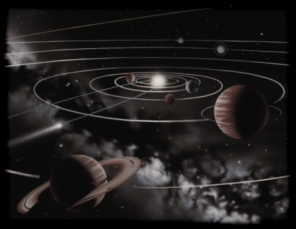

Als een planeet beweegt in het zwaartekrachtveld van vele grote massa's (zonnen), treedt er ook chaotisch gedrag op. Verbazingwekkend is dat een planeet in het zwaartekrachtveld van slechts één zon goed voorspelbare (en niet-chaotische) ellipsvormige trajecten aflegt volgens de wetten van Kepler. Zelfs als er twee zonnen zijn is het gedrag niet chaotisch, alhoewel het veel complexer wordt. Pas in de aanwezigheid van minstens drie zonnen treedt er een echt chaotische situatie op.
Klik op start om de simulatie te beginnen. Met de spoor-knop kun je de banen nauwlettender volgen. Zonnen die naar de parking worden verplaatst, zijn gedeactiveerd.
|
 |
Is ons zonnestelsel chaotisch?